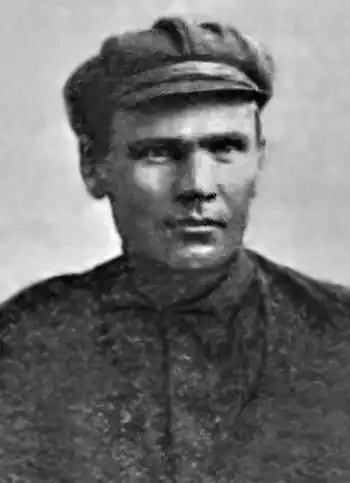

Народився 1895 р. у с. Мошурів на Уманщині (нині Черкащина). Перебуваючи в німецькому полоні за Першої світової війни, друкував оповідання у "Громадській думці" та інших виданнях. Повернувшись в Україну, вступив до "Плуга".
Якийсь час проживав у Києві, а відтак у Харкові.
Окремими виданнями вийшли книжки оповідань: "Батрачка" (1927), "Злочин у степу", "Образа" (1929), "Межа" (1930), "Один день", "Удруге народжені" (1931), "На землі", "Том новел" (1932), "Один день" (1933). Заарештований 6.12.1934 р. у справі "боротьбистської контрреволюційної організації". 27–28.03.1935 р. засуджений на 10 років позбавлення волі. Відбував покарання у Соловках, працював на складі частини постачання, навчався на курсах лікпомів. Особливою трійкою 9.10.1937 р. засуджений до найвищої кари. Розстріляний 3.11.1937 р. в Сандармоху.